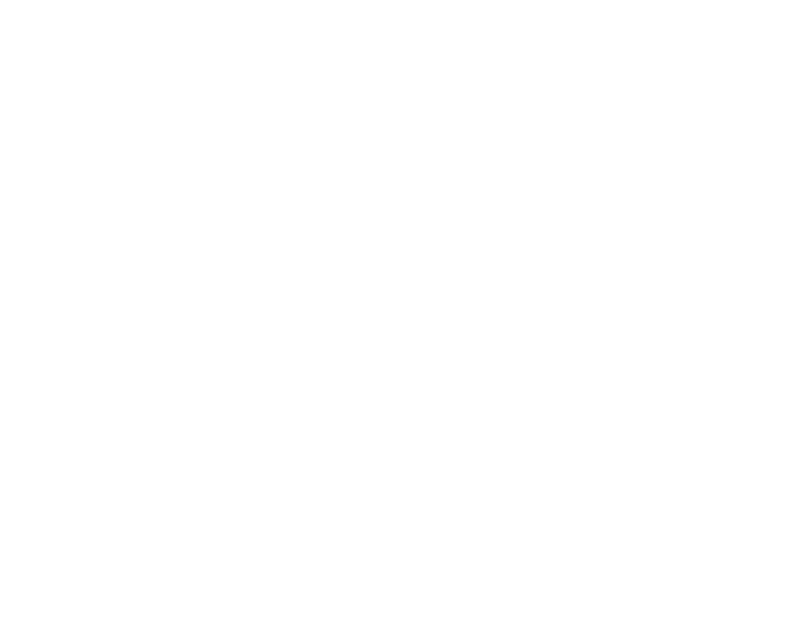

Designing clear, usable product systems for real-world workflows.
Featured Project
Portfolio Product Design
A demonstration of a end-to-end designed product experience — featuring my redesigned WIP website showing how a user moves from a landing page into a structured blogging and article system.

Portfolio to Professional Website — Designing the Experience Layer
End-to-End Product Design- Designed full landing → article journey
- Structured content for progressive disclosure
- Reduced cognitive load through layout separation
- Built scalable foundation for future writing + case studies
About
Me, The Product Designer
I'm a product designer that thinks beyond visuals and focus on how systems actually work for users. By prioritizing alignment across UI, UX, and foundational system logic disciplines I provide experiences that feel intuitive and scalable.This also includes identifying friction, restructuring workflows, and designing solutions that improve clarity, control, and overall usability.
How I Work
- Clarify the problem, goals, and constraints
- Map user flows before designing visuals
- Explore solutions through wireframes
- Refine layouts with the full journey in mind
- Document decisions and trade-offs
Tools & Skills
- Product & UX Design — User flows, wireframes, usability
- UI Design — Layout systems, spacing
- Front-End — HTML (Strong), CSS (Developing), JS (Foundation)
- Figma